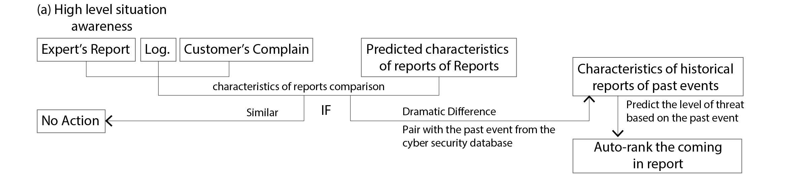
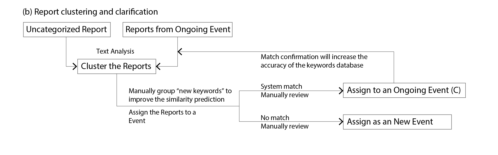
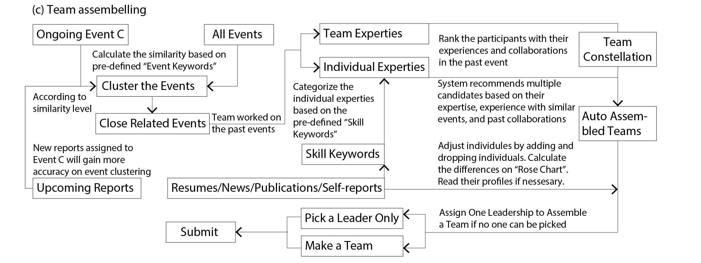

VAST Challenge 2020: Mini-Challenge 3
The goal of the annual IEEE Visual Analytics Science and Technology (VAST) Challenge is to advance the field of visual analytics through competition.

Project Overview
Description
As a solution to the VAST Challenge 2020 Mini-Challenge 3, our team presents you ConstellationBuilder, a high-level situation-awareness and team assembly interface for cyber events. ConstellationBuilder aims to identify a range of different cyber-attack events as early as possible, determine their characteristics, and quickly assemble a team of white hat members with complementary skills to respond to each event. Specifically, the system clusters massive past reports and distills events based on their similarity of reports, then adopts collaborative filtering recommendations to suggest the most relevant events. After exploring the connection between historical events and team members who resolved the issues, our system recommends the most suitable team/constellation to handle each event. We call a team “constellation” because they shine like stars on solving cyber problems.
Team Members:
Prince Owusu Attah, Interaction Design, Purdue University, powusuat@purdue.edu
Lu Ding, Intelligent Visualization and Interaction Lab, Computer Graphics
Technology, Purdue University, ding241@purdue.edu
Xiaolei Guo, Intelligent Visualization and Interaction Lab, Computer Graphics
Technology, Purdue University, guo579@purdue.edu
Tianyi Zhang, College of Computer Science and Technology, Nanjing University of
Aeronautics and Astronautics, zhangtianyi@nuaa.edu.cn
Weiyue Deng, Intelligent Visualization and Interaction Lab, Computer Graphics
Technology, Purdue University, deng161@purdue.edu
Xuan Thao (Susie) Nguyen, School of Media Arts & Design, James Madison University,
nguyenxx@dukes.jmu.edu
Yunran Ju, Interaction Design, Purdue University, ju27@purdue.edu
Dr. Jieqiong Zhao, Electrical and Computer Engineering, Purdue University,
zhao413@purdue.edu
Dr. Chen Guo, School of Media Arts & Design, James Madison University,
guo4cx@jmu.edu
Dr. Zhenyu Cheryl Qian, Art and Design, Purdue University, qianz@purdue.edu
Dr. Yingjie Victor Chen, Intelligent Visualization and Interaction Lab, Computer
Graphics Technology, Purdue University, victorchen@purdue.edu
Tools Used:
Adobe Illustrator, Adobe AfterEffects
VAST Challenge 2020 Award:
Award for Effectively Transforming Task Decomposition into Conceptual Design

System Components
ConstellationBuilder is comprised of three core displays: report view, an event view, and a team constellation view (Fig. 2). All the views are visually linked by highlighting instances of the same object in one view.
Fig. 3 illustrates how ConstellationBuilder incorporates machine learning into the system and shows what uncertainties exist in both the data and the algorithms. For related reports, events, and experts, the uncertainties can be reflected in the similarity calculation. Therefore, our system recommends a list of reports, events, or experts ranking by similarity scores. Analysts can review the results and choose the most appropriate ones based on their knowledge.
The report view consists of a map view (Fig. 4 top right), characteristics of reports view (Fig. 4 middle right), report cluster view (Fig. 4 bottom left), list of reports (Fig. 4 bottom right), and detailed report view (Fig. 4 top left). Various new reports will flash in the report cluster view. Different icons represent different types of reports. ConstellationBuilder automatically clusters the reports based on the similarity measures with past reports. Different colors are used to differentiate the report clusters. The color saturation indicates the time.
The map view shows the geographical distributions of these reports. From the combined functionalities of reports view, the analyst can tell the difference between characteristics of reports from new events, past events, and predicted ones.
  